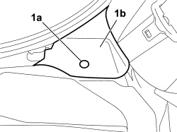
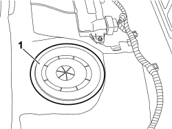
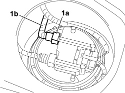
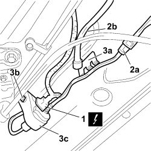
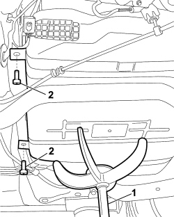
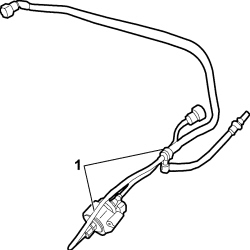

5020M30 PUMP FOR METERING FUEL TO SUPPLEMENTARY INDEPENDENT HEATER R R
- Path
- Procedures > 50 AUXILIARY UNITS > 5020 HEATER > 5020M SUPPLEMENTARY INDEPENDENT HEATER > 5020M30 PUMP FOR METERING FUEL TO SUPPLEMENTARY INDEPENDENT HEATER R R
- Kind
- repair procedure (removal / refitting; the operation number is the code)
- Applies to
- engines: 1.9 JTD 8v, 1.9 JTD 16v, 2.4 JTD 20v; all production periods
- Interactive page
- https://sloeber94.github.io/elrnDB-fCrm/en/#/194001932
Applies to: engines: 1.9 JTD 8v, 1.9 JTD 16v, 2.4 JTD 20v; all production periods
- Have a suitable container ready for collecting the residual fuel.
Applies to: engines: 1.9 JTD 8v, 1.9 JTD 16v, 2.4 JTD 20v; all production periods
 Removing
Removing
 Refitting
Refitting- Turn the ignition key to the OFF position.
- Disconnect the negative battery terminal.
description | Connector | |
|---|---|---|
BATTERY |
Op. 7050A20 ONE-PIECE REAR SEAT CUSHION - R.R.
1. Release the button (1a) and release the edge of the carpet (1b), then repeat the operation on the other side of the vehicle.

Applies to: engines: 1.9 JTD 8v, 1.9 JTD 16v, 2.4 JTD 20v; all production periods
Op. 7050A33 REAR SEAT CUSHION SOUND DEADENING DEVICE/SPACER - R R
1. Release the access cover to the fuel pump on the tank.

Applies to: engines: 1.9 JTD 8v, 1.9 JTD 16v, 2.4 JTD 20v; all production periods
1. Using the retaining clips (1a) disconnect the rapid connector (1b) for the supply pipe from the fuel pump.

Applies to: engines: 1.9 JTD 8v, 1.9 JTD 16v, 2.4 JTD 20v; all production periods
1. Disconnect the electrical connection from the additional heater fuel supply pump.
Description | Connector | |
|---|---|---|
1 | ADDITIONAL HEATER PUMP |
2. Using the retaining clips, disconnect the rapid connector for the fuel supply pipe (2a) to the additional heater and return pipe (2b) to the tank.
3. Release the additional heater supply pipe from the retaining clips (3a), undo the retaining nut (3b) and detach the fuel pump (3c) from the support.

Applies to: engines: 1.9 JTD 8v, 1.9 JTD 16v, 2.4 JTD 20v; all production periods
1. Position a hydraulic column lift by he fuel tank.
2. Undo the front bolts fixing the tank mounting brackets then gently lower the hydraulic lift to gain access to the mountings for the fuel supply pipe.

Applies to: engines: 1.9 JTD 8v, 1.9 JTD 16v, 2.4 JTD 20v; all production periods
1. Release the supply pipe from the fuel tank and remove the fuel pump from the vehicle.

Applies to: engines: 1.9 JTD 8v, 1.9 JTD 16v, 2.4 JTD 20v; all production periods
Refitting
Removing- Using the sensor cable, fitted previously, position the supply pipe on the fuel tank and connect the rapid connector to the pump.
- Attach the supply pipe from the tank to the mountings.
- Raise the tank and tighten the mounting bracket front fixing bolts.
- Remove the hydraulic column lift.
- Connect the connectors for the additional heater supply and return pipes.
- Place the fuel pump in position and tighten the fixing nut.
- Attach the fuel supply pipes to the additional heater and the return pipes to the tank to the mountings.
- Connect the electrical connection to the fuel pump.
Description | Connector | |
|---|---|---|
ADDITIONAL HEATER PUMP |
- Fit the access cover to the fuel pump on the tank.
Op. 7050A33 REAR SEAT CUSHION SOUND DEADENING DEVICE/SPACER - R R
- Position the edge of the carpet and fit the retaining button, then repeat this operation on the opposite side of the vehicle.
Op. 7050A20 ONE-PIECE REAR SEAT CUSHION - R.R.
- Connect the negative battery terminal.
Description | Connector | |
|---|---|---|
BATTERY |